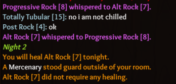

What happened?
Observer followed an outted Merc to check if he was lying about contract at night. Target received a messaged saying that a mercenary guarded but Observer’s reports said that the Merc did not visit anyone that night.
Additional info: Merc’s target (physician) and the Cult Leader both visited the Merc that night as well. Observer’s logs reflected that accurately. The Merc was converted that night as well.
What was SUPPOSED to happen?
The Observer should have received a messaged saying that Merc visited their target.
Steps to reproduce:
Not exactly sure, but it seems like the things that stood out were:
- Have Cult Leader convert mercenary same night as he guards target
- Have Observer watch
Comments:
It was confirmed by end game screen and Cult members that there was no Apostle at any time during the game.
I don’t know what else to add but as I was the target (phys) Ill post a screenshot of my logs below.

Edit: for clarification, 7 was Merc and 8 was Obs telling Merc to guard his target in whispers.